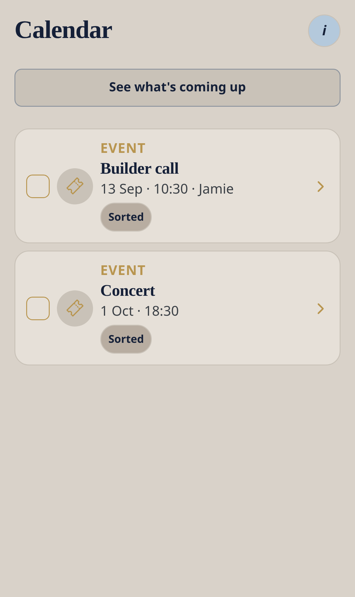

Core module — no Ready4 pack required
Calendar
Appointments and events can link to the phone calendar. Coming Up is still the life timeline.
Nudge me Ready v3 · 0.3.1 · Menu → Calendar.


Workflow
- Create an appointment or event.
- Optionally link it to the phone calendar from the item.
- Or tap Show my appointments here on Home.
- Open Calendar to see linked dated items.
Good to know
- There is no second calendar engine.